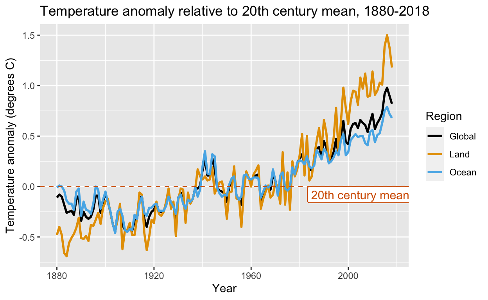
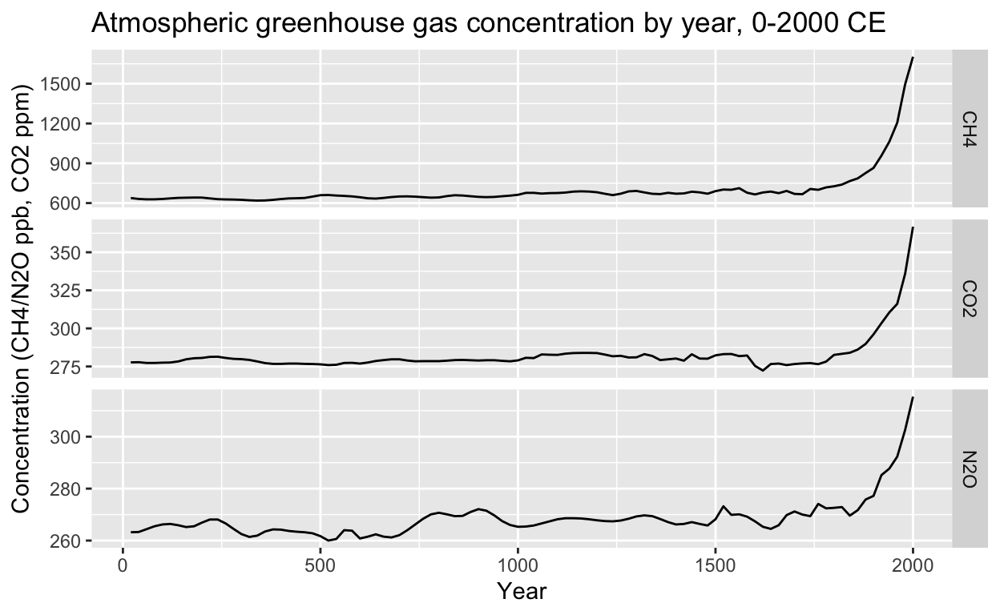
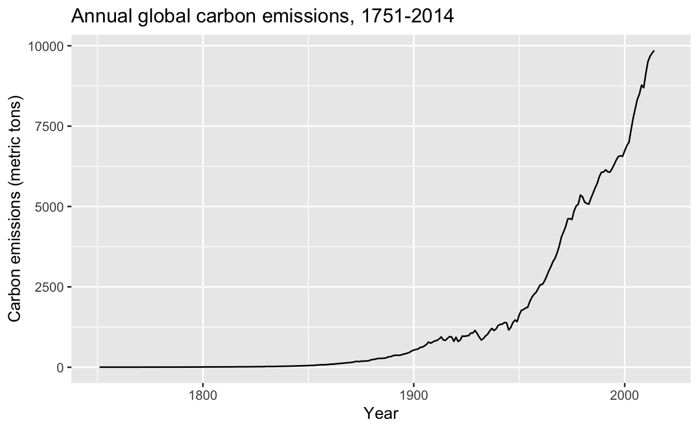
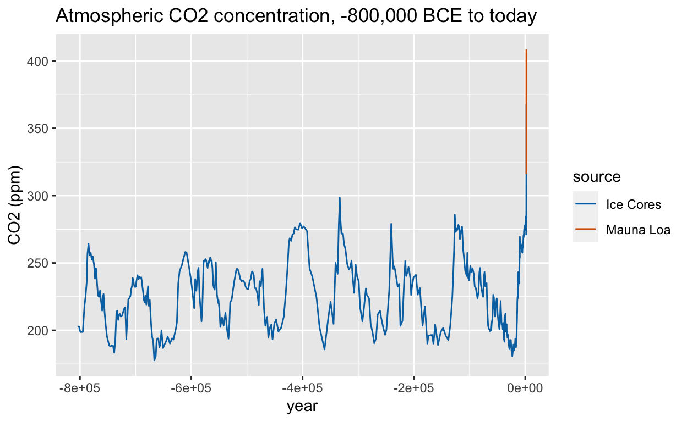
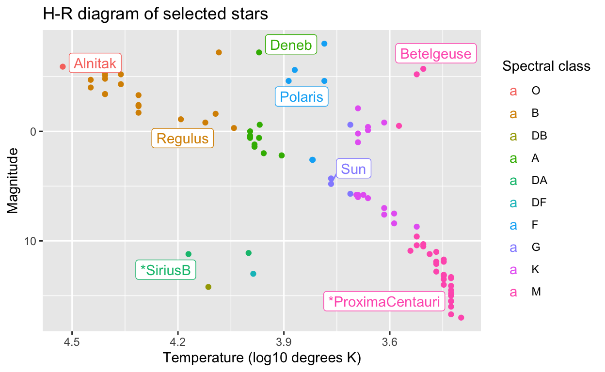
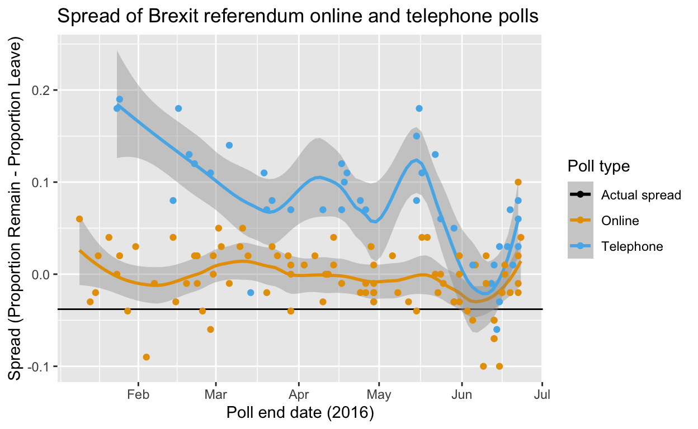
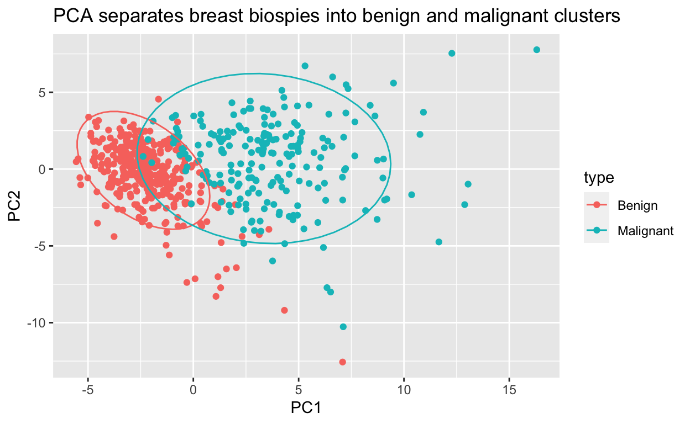

We have expanded the dslabs package, which we previously introduced as a package containing realistic, interesting and approachable datasets that can be used in introductory data science courses.
This release adds 7 new datasets on climate change, astronomy, life expectancy, and breast cancer diagnosis. They are used in improved problem sets and new projects within the HarvardX Data Science Professional Certificate Program, which teaches beginning R programming, data visualization, data wrangling, statistics, and machine learning for students with no prior coding background.
You can install the dslabs package from CRAN:
install.packages("dslabs")If you already have the package installed, you can add the new datasets by updating the package:
update.packages("dslabs")You can load the package into your workspace normally:
library(dslabs)Let’s preview these new datasets! To code along, use the following libraries and options:
# install packages if necessary
if(!require("tidyverse")) install.packages("tidyverse")
if(!require("ggrepel")) install.packages("ggrepel")
if(!require("matrixStats")) install.packages("matrixStats")
# load libraries
library(tidyverse)
library(ggrepel)
library(matrixStats)
# set colorblind-friendly color palette
colorblind_palette <- c("black", "#E69F00", "#56B4E9", "#009E73",
"#CC79A7", "#F0E442", "#0072B2", "#D55E00")Three datasets related to climate change are used to teach data visualization and data wrangling. These data produce clear plots that demonstrate an increase in temperature, greenhouse gas levels, and carbon emissions from 800,000 years ago to modern times. Students can create their own impactful visualizations with real atmospheric and ice core measurements.
temp_carbonThe temp_carbon dataset includes annual global temperature anomaly measurements in degrees Celsius relative to the 20th century mean temperature from 1880-2018. The temperature anomalies over land and over ocean are reported also. In addition, it includes annual carbon emissions (in millions of metric tons) from 1751-2014. Temperature anomalies are from NOAA and carbon emissions are from Boden et al., 2017 via CDIAC.
data(temp_carbon)
# line plot of annual global, land and ocean temperature anomalies since 1880
temp_carbon %>%
select(Year = year, Global = temp_anomaly, Land = land_anomaly, Ocean = ocean_anomaly) %>%
gather(Region, Temp_anomaly, Global:Ocean) %>%
ggplot(aes(Year, Temp_anomaly, col = Region)) +
geom_line(size = 1) +
geom_hline(aes(yintercept = 0), col = colorblind_palette[8], lty = 2) +
geom_label(aes(x = 2005, y = -.08), col = colorblind_palette[8],
label = "20th century mean", size = 4) +
ylab("Temperature anomaly (degrees C)") +
xlim(c(1880, 2018)) +
scale_color_manual(values = colorblind_palette) +
ggtitle("Temperature anomaly relative to 20th century mean, 1880-2018")
greenhouse_gasesThe greenhouse_gases data frame contains carbon dioxide (\(\mbox{CO}_2\), ppm), methane (\(\mbox{CO}_2\), ppb) and nitrous oxide (\(\mbox{N}_2\mbox{O}\), ppb) concentrations every 20 years from 0-2000 CE. The data are a subset of ice core measurements from MacFarling Meure et al., 2006 via NOAA. There is a clear increase in all 3 gases starting around the time of the Industrial Revolution.
data(greenhouse_gases)
# line plots of atmospheric concentrations of the three major greenhouse gases since 0 CE
greenhouse_gases %>%
ggplot(aes(year, concentration)) +
geom_line() +
facet_grid(gas ~ ., scales = "free") +
xlab("Year") +
ylab("Concentration (CH4/N2O ppb, CO2 ppm)") +
ggtitle("Atmospheric greenhouse gas concentration by year, 0-2000 CE")
Compare this pattern with manmade carbon emissions since 1751 from temp_carbon, which have risen in a similar way:
# line plot of anthropogenic carbon emissions over 250+ years
temp_carbon %>%
ggplot(aes(year, carbon_emissions)) +
geom_line() +
xlab("Year") +
ylab("Carbon emissions (metric tons)") +
ggtitle("Annual global carbon emissions, 1751-2014")
historic_co2A common argument against the existence of anthropogenic climate change is that the Earth naturally undergoes cycles of warming and cooling governed by natural changes beyond human control. \(\mbox{CO}_2\) levels from ice cores and modern atmospheric measurements at the Mauna Loa observatory demonstrate that the speed and magnitude of natural variations in greenhouse gases pale in comparison to the rapid changes in modern industrial times. While the planet has been hotter and had higher \(\mbox{CO}_2\) levels in the distant past (data not shown), the current unprecedented rate of change leaves little time for planetary systems to adapt.
data(historic_co2)
# line plot of atmospheric CO2 concentration over 800K years, colored by data source
historic_co2 %>%
ggplot(aes(year, co2, col = source)) +
geom_line() +
ylab("CO2 (ppm)") +
scale_color_manual(values = colorblind_palette[7:8]) +
ggtitle("Atmospheric CO2 concentration, -800,000 BCE to today")
starsIn astronomy, stars are classified by several key features, including temperature, spectral class (color) and luminosity (brightness). A common plot for demonstrating the different groups of stars and their propreties is the Hertzsprung-Russell diagram, or H-R diagram. The stars data frame compiles information for making an H-R diagram with about approximately 100 named stars, including their temperature, spectral class and magnitude (which is inversely proportional to luminosity).
The H-R diagram has the hottest, brightest stars in the upper left and coldest, dimmest stars in the lower right. Main sequence stars are along the main diagonal, while giants are in the upper right and dwarfs are in the lower left. Several aspects of data visualization can be practiced with these data.
data(stars)
# H-R diagram color-coded by spectral class
stars %>%
mutate(type = factor(type, levels = c("O", "B", "DB", "A", "DA", "DF", "F", "G", "K", "M")),
star = ifelse(star %in% c("Sun", "Polaris", "Betelgeuse", "Deneb",
"Regulus", "*SiriusB", "Alnitak", "*ProximaCentauri"),
as.character(star), NA)) %>%
ggplot(aes(log10(temp), magnitude, col = type)) +
geom_point() +
geom_label_repel(aes(label = star)) +
scale_x_reverse() +
scale_y_reverse() +
xlab("Temperature (log10 degrees K)") +
ylab("Magnitude") +
labs(color = "Spectral class") +
ggtitle("H-R diagram of selected stars")Warning: Removed 88 rows containing missing values (geom_label_repel).
death_probObtained from the US Social Security Administration, the 2015 period life table lists the probability of death within one year at every age and for both sexes. These values are commonly used to calculate life insurance premiums. They can be used for exercises on probability and random variables. For example, the premiums can be calculated with a similar approach to that used for interest rates in this case study on The Big Short in Rafael Irizarry’s Introduction to Data Science textbook.
brexit_pollsbrexit_polls contains vote percentages and spreads from the six months prior to the Brexit EU membership referendum in 2016 compiled from Wikipedia. These can be used to practice a variety of inference and modeling concepts, including confidence intervals, p-values, hierarchical models and forecasting.
data(brexit_polls)
# plot of Brexit referendum polling spread between "Remain" and "Leave" over time
brexit_polls %>%
ggplot(aes(enddate, spread, color = poll_type)) +
geom_hline(aes(yintercept = -.038, color = "Actual spread")) +
geom_smooth(method = "loess", span = 0.4) +
geom_point() +
scale_color_manual(values = colorblind_palette[1:3]) +
xlab("Poll end date (2016)") +
ylab("Spread (Proportion Remain - Proportion Leave)") +
labs(color = "Poll type") +
ggtitle("Spread of Brexit referendum online and telephone polls")
brcaThis is the Breast Cancer Wisconsin (Diagnostic) Dataset, a classic machine learning dataset that allows classification of breast lesion biopsies as malignant or benign based on cell nucleus characteristics extracted from digitized images of fine needle aspirate cytology slides. The data are appropriate for principal component analysis and a variety of machine learning algorithms. Models can be trained to a predictive accuracy of over 95%.
# scale x values
x_centered <- sweep(brca$x, 2, colMeans(brca$x))
x_scaled <- sweep(x_centered, 2, colSds(brca$x), FUN = "/")
# principal component analysis
pca <- prcomp(x_scaled)
# scatterplot of PC2 versus PC1 with an ellipse to show the cluster regions
data.frame(pca$x[,1:2], type = ifelse(brca$y == "B", "Benign", "Malignant")) %>%
ggplot(aes(PC1, PC2, color = type)) +
geom_point() +
stat_ellipse() +
ggtitle("PCA separates breast biospies into benign and malignant clusters")
We hope that these additional datasets make the dslabs package even more useful for teaching data science through real-world case studies and motivating examples.
Are you an R programming novice but want to learn how to do all of this and more? Check out the Data Science Professional Certificate Program from HarvardX on edX, taught by Rafael Irizarry!